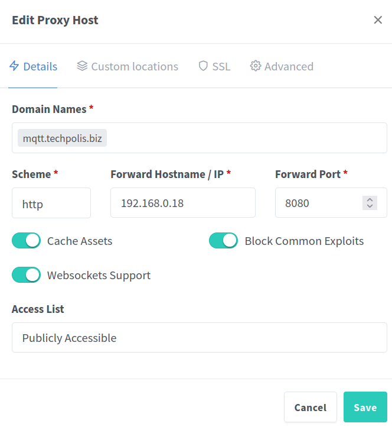

На Nginx Proxy Manager делается разгрузка SSL
Наружу работает по протоколу WSS, внутри по ws.
Сертификаты запрашиваются от Let's Encrypt
NPM и Mosquitto работают в Docker
Конфиг от mosquitto
persistence true
persistence_location /mosquitto/data/
user mosquitto
# Port to use for the default listener.
listener 1883
listener 8080
protocol websockets
#allow_anonymous true
log_dest file /mosquitto/log/mosquitto.log
log_dest stdout
include_dir /mosquitto/config/conf.d
#Это для собственных сертификатов
#listener 8883
#certfile /mosquitto/ssl/mqtt-server.crt
#keyfile /mosquitto/ssl/mqtt-server.key
#cafile /mosquitto/ssl/ca.crt
#protocol websockets
На стороне NPM
